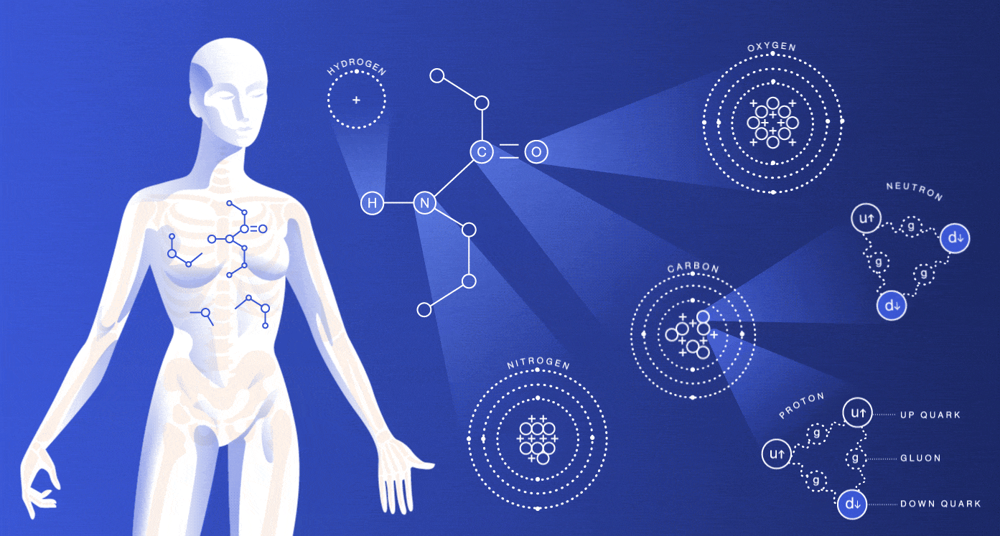
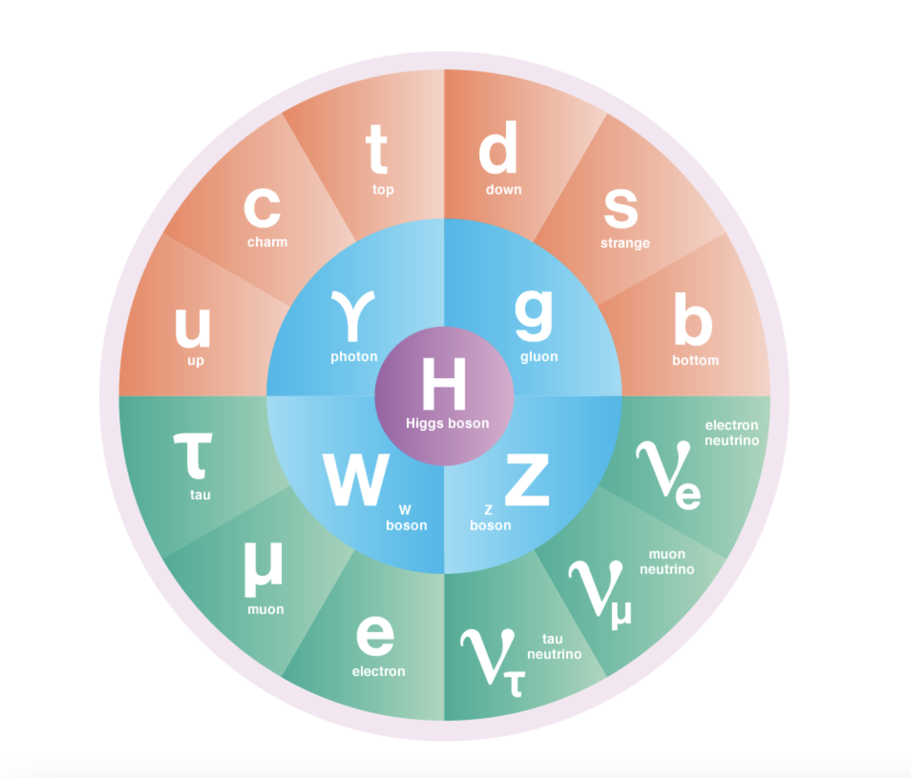
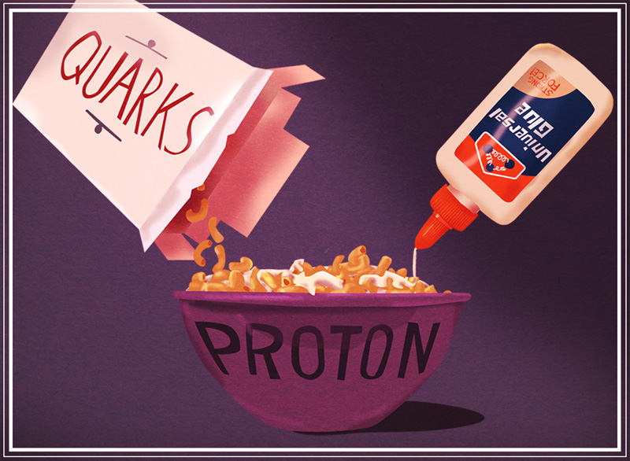
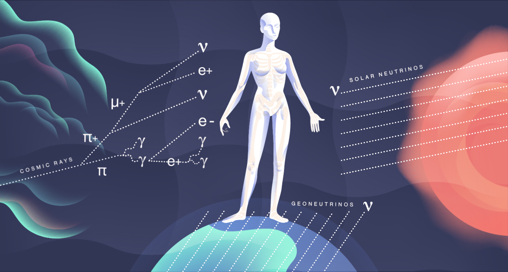
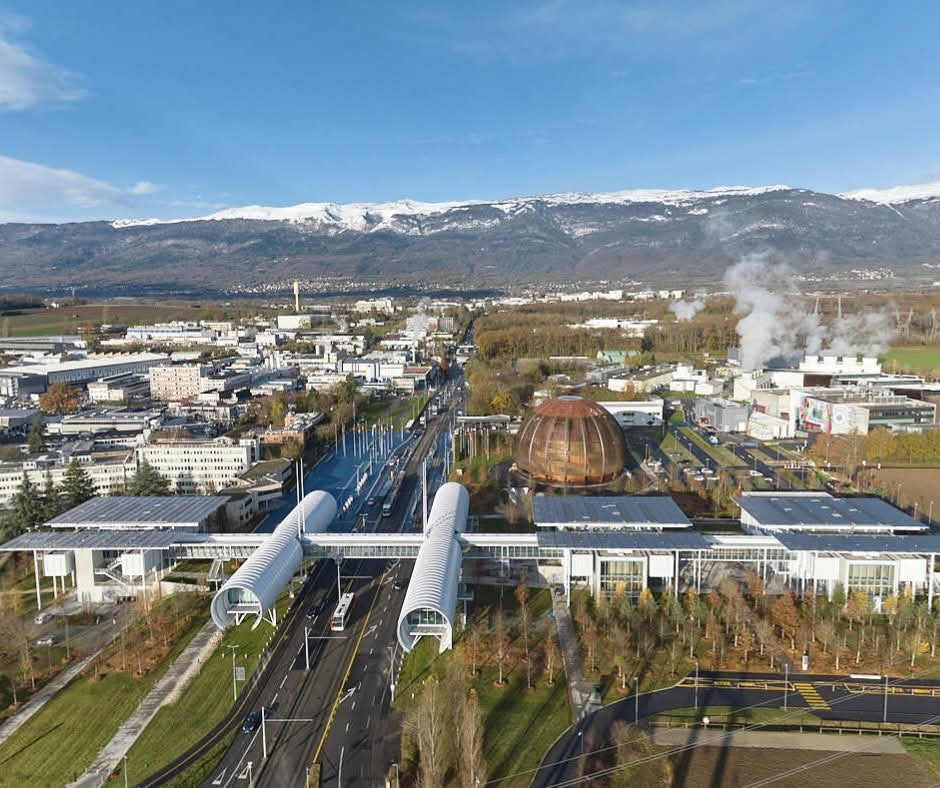
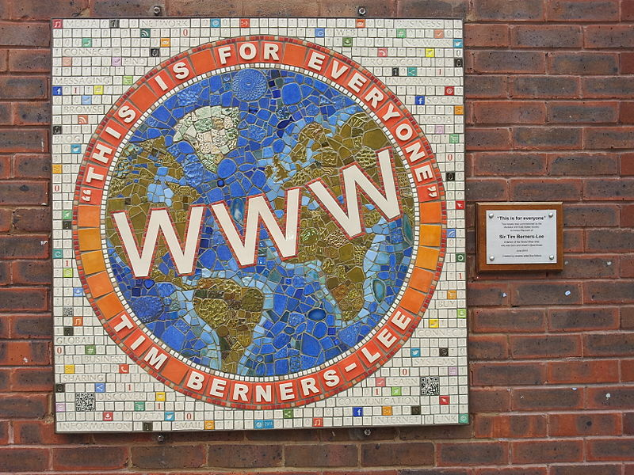
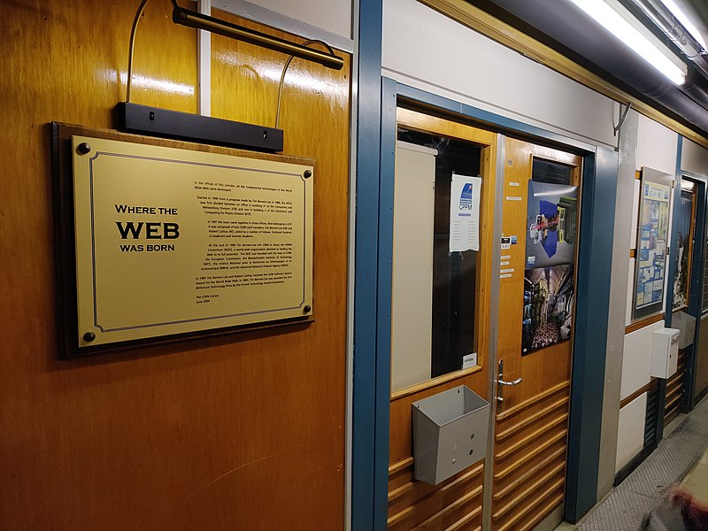
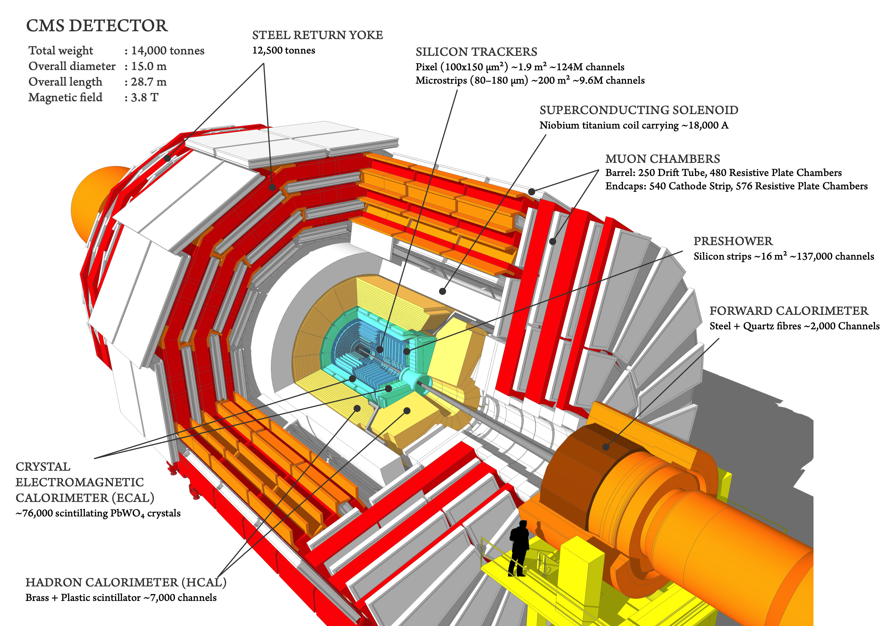
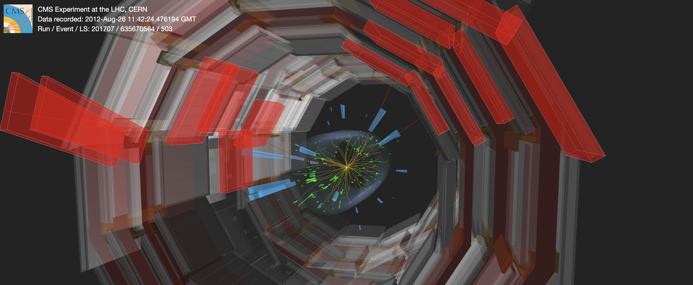

Particle Physics for Year 3
Dr. Thomas McCauley (Edmund's dad)
Thomson House School
13 March 2025
About me
What does a particle physicist do?
A particle physicist is a scientist that studies how the Universe works at the smallest scale. This means: a particle physicist smashes particles together at very high energy and sees what happens.
Particles?
Who can name any particles?
Electrons, neutrons, and protons make up all the stuff we see: from you and me, Earth, the Sun, planets, stars, and galaxies.

These are all the "fundamental" particles that we know of. They cannot be broken down into anything smaller. The particle in the middle, the Higgs boson, was discovered at CERN in 2012.

Particles interact with each other by forces. Some of these particles (like the gluon, photon, W and Z bosons) carry these forces.
Forces?
There are 4 forces. Can anyone name any?
Gravity
- When you drop something and it falls: that's Gravity
- Gravity keeps the planets going around the Sun
- Gravity holds the large Universe together
Electromagnetism (Electricity + Magnetism)
Electricity (which powers our lights) and magnetism (which is how magnets work) are part of the same force.
Strong Force
The Strong force is very strong and holds together particles like protons and neutrons.

Weak Force
The Weak force is very weak. Particles called neutrinos feel only the Weak force. This is a good thing. Look at your thumb. Just this second over a billion neutrinos produced in the Sun passed through your thumbnail!

CERN is a large laboratory outside Geneva, Switzerland where thousands of scientists and engineers work to study particles and forces.

Who knows where this is?

The World-Wide Web (WWW), which is how most of us access and use the Internet, was invented at CERN by Sir Tim Berners-Lee, who's from East Sheen.

The Large Hadron Collider at CERN smashes protons together (hundreds of millions per second) at very high energy and we study what happens. We build big machines to see what happens in these collisions.
I work on one of the big machines (which is called CMS). The CMS detector is bigger than the Thomson House lower school building!

The CMS experiment is made up of thousands of physicists and engineers from all over the world (see if you can find me).
Click on this image to see more of the LHC and CMS:

Click on this image to see more of what happens when protons collide in CMS:

Want to become a particle physicist?
You'll have to learn a lot about physics, maths, computers, and electronics. There's still a lot to discover and we'll be smashing particles together for a long time. So there is plenty of time to learn and join the fun.